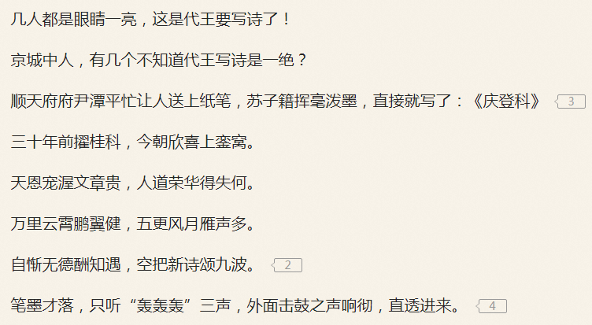

“在这举国同悲的黄道吉日，还有人炫耀普天同庆①”，郭春海皱着眉头听着窗外鸣笛，“人类的悲欢并不相通，我只觉得他们吵闹”。
“二月江南花满枝，他乡寒食远堪悲。贫居往往无烟火，不独明朝为子推②”，柴禾妞念了22句诗，“空军大元帅嘛，就是要买跌做空才有得赚。面对发球难财的质疑，党国高音喇叭只要给个特写，主角团队在韭菜的鸣笛助兴当中板起七八张如丧考妣脸做痛心疾首状，就可以闷声发大财”。
“满衣血泪与尘埃，乱后还乡亦可哀。风雨梨花寒食过，几家坟上子孙来？③”郭春海也念了22句诗，“你猜，等兵不血刃的第三次世界大战打完之后，伤寒马力会不会去上坟？”
“没听说它们家有人死，死的都是别人”，柴禾妞讽刺，“发动生化恐怖袭击，还用不着自杀，果然是以实际行动与傻哔绿人划清界限”。
“十步一岗五步一哨全面撒网排查，外防输入内防反弹”，郭春海评论，“傻哔生化人弹即便自杀也没能发动恐怖袭击，果然只能沦为笑柄了吖”。
“色目情报掮客在移动互联网当中到处鼓吹趁此良机一举解决人口老龄化问题，反正老迈年高跟不上时代不用智能手机的钦定被历史の五对负重轮碾为齑粉的目标看不到”，柴禾妞嘲笑，“结果死的都是底层老人，高层老一辈无产阶级革命家们都在绿水青山疗养院当中盘点金山银山对续命擂台赛押注呢，根红苗正童年才俊抢班夺权的野望，还是不能实现吖”。
“我中华兲朝上国自有国情在此，金融市场不许做空，没得赚当然用不着兲下大乱”，郭春海解说，“香港就可以做空，接下来的看点，就是伤寒马力如何开足马力祸害港股关系户，敬请期待”。
未完待续
- ①
- ② 唐·孟云卿《寒食》
- ③ 明·高启《送陈秀才还沙上省墓》